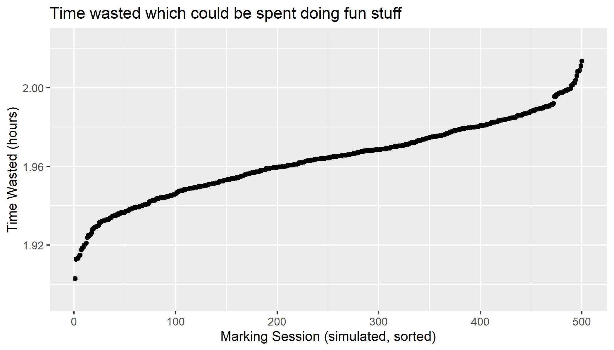

Marking. I dread it. Not regarding the content: I believe students—when giving the right conditions to express themselves and learn—can produce fantastic scholarship. I’m always interested in ways to improve my coursework to ensure it is making use of the current best practice in teaching and learning. However: the burden around the procedure of marking is something that is most unwelcome. Every year I waste time having to manage hundreds of files, not counting appendices and miscellaneous image files students may include with their coursework submission. So I built this.
What is Lancomarker?
Lancomarker is a suite of web applications for automating much of the student coursework marking process. It consists of 3 main tools: Lancomarker, Lancomarker Processing, and Lancomarker SIA. Together, these tools form a pipeline for information flow; students write their coursework, submit via the familar channels, and then the instructor can mark submissions and generate feedback with less administrative effort.
Why did I build Lancomarker?
In 2021, I spent 6 weeks marking student coursework. This was intense, and meant I had no capacity for engaging in any other academic commitment during this time. Reflecting on the workload, I realized there were severe bottlenecks throughout the marking process. Namely,
1) Student submissions: My coursework consists of essay/prose, which although may appear unusual for a computing course, is essential to assessing students’ engagement with the course material as it encourages critical thinking and communication. Both of these skills are necessary for software engineers to work in teams of people with broad skillsets. To facilitate this, students submit their coursework in PDF formats, however PDF is a terrible format for several reasons. First, it is immutable (for the most part): one may annotate a PDF file, but these annotations are not easily updated/modified. Secondly, it is not machine readable: it is non-trivial to parse PDF annotations and/or convert them to alternative formats. This is useful for transcribing comments for visually impaired students and/or collating comments into a report for feeding back to the school. To combat this, some may suggest a WYSIWYG editor for example Microsoft Word. However, these all come with their own file format problems, for example incompatability across operating systems and/or how images and text are rendered. In the past, I have tried giving students Word templates to use but this has never been a satisfactory solution to the problem.
All of these factors contributed to unnecessary administrative burden when marking as I would open and close several different applications simply to read a student’s submission. This is related to the next point.
2) Indexing student coursework: With relaxed criteria re: naming and file type, finding student submissions can be a nightmare. I have devised the following (very rough) model for marking a coursework submission:
where \(T_f\) is the time it takes to find a student’s submission in the VLE/my local file system, \(T_o\) is the time to open the file on my computerm which itself is a product of processor speed, number of concurrent processes, memory etc), \(T_v\) is the time to verify a submission, which can involve starting the whole process again to find and open a different file, and/or confirming the submission is valid (e.g., follows the rules/assessment criteria). \(T_m\) is the time taken to mark a piece of coursework. Let’s assume this is kept constant as per WAM (spoiler: it’s often not).
Below is a simulation I wrote of this model. I’ve removed the constant \(T_m\) term for visualization. Bear in mind this is a very optimistic model, so times could be a lot worse!

At best, this is 1.8 hours of my life wasted because file management is time intensive. Lancomarker aims to eliminate this time wasting completely.
3) Preparing student marks for submission to school boards: In parallel to marking, I had to manually update a spreadsheet with each students’ marks. This is not just another time sink, but is also an opportunity for human error as I transcribe the mark manually by hand from the PDF comments/rubric. Having done this several times and realized it was silly, I’d had enough.
So I built Lancomarker.
How does it work?
Below is a system diagram of Lancomarker. The pipeline is as follows:
1) Students complete their coursework via the SIA or simply writing the text file. This is the first time gain: I teach computer science students, which means having a basic text editor is a prerequisite. They can use any text editor they want (even create their own), and complete their coursework. Factor over form: what matters is the content, not the presentation here. The SIA gives several other benefits; I can dictate filenames (something that comes useful later on) as students more often than not will incorrectly name a file through accident or malice. I can also enforce coursework constraints such as appendices (e.g., PNG/JPG only for images) and character limits for written work.
2) Students submit their work using standard channels. This makes the system very flexible, as there is no need for them to learn a new platform if they don’t want to, and there is no effort on IT and/or admin to accommodate lancomarker format submissions. From outside Lancomarker, the existing submission procedure is as it was.
3) Submissions are batch downloaded, zipped up, then pre-processed using Lancomarker Processing. This step creates an intermediary representation of submissions. At this point, the instructor may generate unmarked PDFs of all submissions to mark the old way should they choose to. This might sound odd, but it is critical to team work: my modules are (fortunately) supported by some TAs who may assist with marking, and who may not wish to use Lancomarker, instead preferring to read PDFs. The point is this: as all submissions have been processed, they are now readily indexable meaning they can be found based on a known ID (e.g., student number) rather than whatever file name was provided by the student. Should the instructor wish to continue with lancomarker, they can then process submissions further into the lancomarker format.
4) Submissions are then uploaded to Lancomarker. Using Lancomarker, I can now pull submissions directly from a database, giving me direct access to a submission with a single click. Lancomarker presents the submission as rendered HTML, and provides a UI for associating a mark value to each section of the written report. This also facilitates error checking: as Lancomarker knows the maximum marks for a section, the instructor can’t accidentally assign a mark greater than the limit as may happen when simply marking a PDF. The UI also facilitates freetext comments for sections.
5) Marked submissions are downloaded from Lancomarker, then processed further using Lancomarker Processing. Here marked PDFs are generated, along with any CSV spreadsheets required. As everything is machine readable, it is trivial to import marked submissions into whatever statistics software tickles your fancy for generating summary reports etc.
All in all, software should help, not hinder work. Marking coursework is a widely mandated activity for academics, so I was surprised that few were looking to improve the processes around marking, at least within my immediate network. Lancomarker is deployed in the 2022/23 academic year. Let’s see if my theoretical time gain holds up in practice.
 https://orcid.org/0000-0003-1169-2842
https://orcid.org/0000-0003-1169-2842